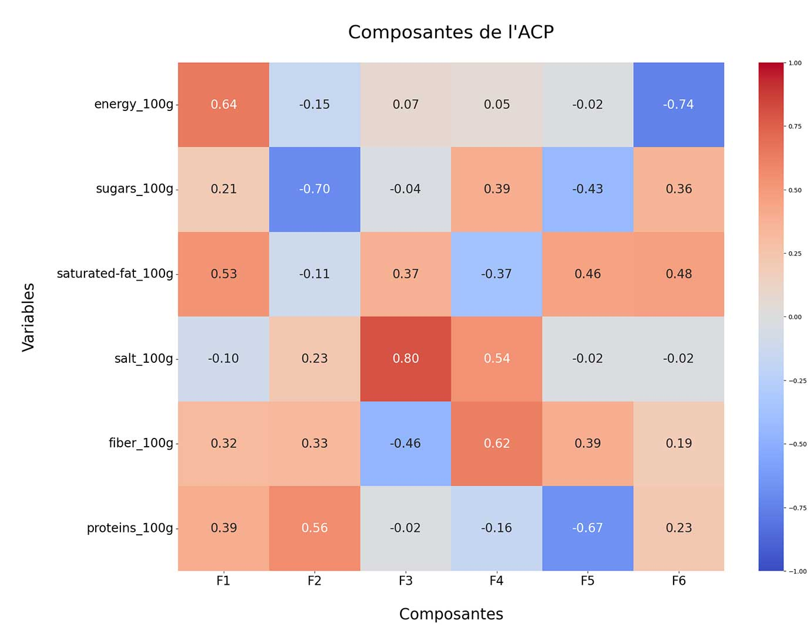

Introduction
Ce projet vise à préparer la base de données libre et ouverte d'Open Food Facts. Open Food Facts est un projet collaboratif dont le but est de constituer une base de données libre et ouverte sur les produits alimentaires commercialisés dans le monde entier.
L'objectif est ici de nettoyer et explorer les données, afin de pouvoir déterminer par la suite s'il serait envisageable de créer une application d'auto-complétion pour aider les usagers à remplir plus efficacement la base de données.
Les étapes suivantes seront réalisées :
- Repérer les variables intéressantes.
- Nettoyer le jeu de données en traitant les valeurs aberrantes et les valeurs manquantes.
- Réaliser une analyse exploratoire des données.
- Déterminer la faisabilité d'une application permettant de suggérer les valeurs manquantes pour une variable dont plus de 50% des valeurs sont manquantes.
Retrouvez tout le code de ce projet sur mon GitHub
Premier aperçu du dataset
Ce dataset comporte 320 772 lignes et 162 colonnes. 16 colonnes du dataset sont entièrement vides.
De nombreuses données sont manquantes :.
Premiers traitements
— Colonnes utilisées pour vérifications au cours du nettoyage (nom des produits, groupes d'aliment…).
Valeurs aberrantes
— Cas où Glucides est vide alors que Sucre ne l'est pas.
— Macronutriments pour 100g supérieurs à 100 : suppression.
— Micronutriments supérieurs à 100 000 : suppression.
— Des valeurs élevées dans additives_n : atypiques, pas aberrantes.
— energy_100g : suppression des valeurs supérieures à 3700, qui est la valeur maximale en kJ pour 100g qu'un aliment peut avoir (lipide pur).
Imputation des valeurs manquantes
Nous allons identifier les corrélations linéaires entre certaines variables. Cela nous aidera à choisir une méthode d'imputation adaptée.
Imputation des macronutriments
Distribution non symétriques : imputation par la médiane.
Colonnes nutriscore et nutrigrade
Autres colonnes
Exploration des données
Le nombre d'entrées augmentait progressivement, avant une cassure en 2017 :
Cette cassure provient de l'arrivée massive des produits Américains dans la base de données cette même année :
Répartition des produits dans le monde :
Nutrigrade :

Les macronutriments influent sur le nutrigrade. Exemples :
Nutriscore :
Énergie :
Macronutriments :
Additifs :
Analyse en composantes principales
Nous allons réaliser une ACP sur les macronutriments et voir les liens entre ces variables et les composantes de l'ACP
| Composantes | Variances captées |
|---|---|
| n°1 | 31.01 % |
| n°2 | 21.24 % |
| n°3 | 16.64 % |
| n°4 | 15.39 % |
| n°5 | 9.94 % |
| n°6 | 5.77 % |
| 100 % |


Analyse de la variance (ANOVA)
Cette analyse nous permet d'identifier des corrélations entre des variables quantitatives et qualitatives.
Entre nutriscore et nutrigrade :
F = 99439
p-value < 0,01
Eta² = 0,554
Il y a une corrélation entre nutriscore et nutrigrade, c'était attendu.
Faisabilité de l'application
EN CONCLUSION : ce type d'application est réalisable, mais pour un nombre limité de variables. La question à se poser est : pour quelle variable est-on prêt à perdre en qualité des données au profit d'un système de suggestion ?
Perspectives
— Forcer le remplissage des variables importantes comme les macronutriments.